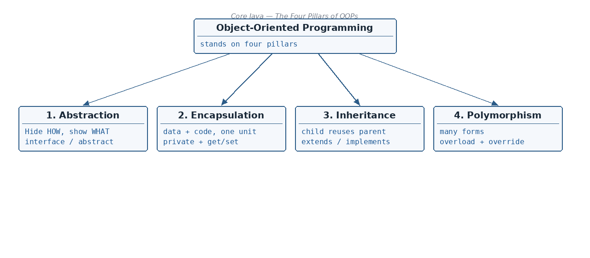

Everyday examples
☕ 7 min read · 🎬 Video walkthrough · 📊 UML diagram · 💻 Runnable code
⚡ In a nutshell — Data Abstraction — hiding how things work, showing only what they do · Data Encapsulation — bundling data with code, and protecting it with getters/setters · Inheritance — reusing a parent class in a child class, the 4 types, and the diamond problem · Polymorphism — one method, many forms (compile-time overloading and runtime overriding)
Object-Oriented Programming stands on four pillars. Just like a building needs all its pillars to stand, good OOP code uses all four ideas together.

Definition: Abstraction hides the internal implementation and shows only the essential functionality to the user.
In simple words: you see what a thing does, not how it does it — like a TV remote: you press a button and the channel changes; you never see the electronics inside.
It can be achieved through an interface and an abstract class.
Car: We are only shown the brake pedal. If we press it, the car's speed reduces. But how does it reduce? That is abstracted (hidden) from us.
An interface only declares what must be done. The class that implements it decides how.
// The interface shows only the essential functionality:
interface Car {
public void applyBreak(); // WHAT: brakes can be applied
public void speedUp(); // WHAT: car can speed up
}
// The hidden implementation (the "HOW"):
class Swift implements Car {
private int speed = 60;
public void applyBreak() {
// internal details the user never sees
speed = speed - 20;
System.out.println("Brake applied. Speed is now " + speed);
}
public void speedUp() {
speed = speed + 20;
System.out.println("Speeding up. Speed is now " + speed);
}
}
public class Main {
public static void main(String[] args) {
Car myCar = new Swift(); // user only knows the Car interface
myCar.speedUp();
myCar.applyBreak();
}
}
Output:
Speeding up. Speed is now 80
Brake applied. Speed is now 60
Remember: Abstraction = show the what, hide the how. Achieved with interfaces and abstract classes.
Definition: Encapsulation bundles the data and the code working on that data into a single unit (the class). It is also known as data hiding.
Think of a medicine capsule: the powder (data) is sealed inside a shell (the class). You cannot touch the powder directly — you take the capsule as a whole.
private (nobody outside can touch them directly).class Dog {
private String color; // data variable — hidden (private)
// public getter — the only way to VIEW the color
public String getDogColor() {
return color;
}
// public setter — the only way to CHANGE the color
public void setColor(String col) {
this.color = col;
}
}
public class Main {
public static void main(String[] args) {
Dog dog = new Dog();
dog.setColor("Black"); // set through the setter
System.out.println(dog.getDogColor()); // read through the getter
}
}
Output:
Black
Remember: Encapsulation = private variables + public getters/setters. Data and the methods that work on it live together in one unit.
Definition: Inheritance is the capability of a class to inherit properties from its parent class.
Think of it like family inheritance: a child automatically receives things from the parent, without earning them again.
extends keyword, or through an interface (with implements).class Animal { // parent class
String name;
public void eat() {
System.out.println(name + " is eating.");
}
}
class Dog extends Animal { // child class — inherits name and eat()
public void bark() {
System.out.println(name + " says: Woof!");
}
}
public class Main {
public static void main(String[] args) {
Dog d = new Dog();
d.name = "Tommy"; // inherited variable — we did not rewrite it
d.eat(); // inherited method — we did not rewrite it
d.bark(); // Dog's own method
}
}
Output:
Tommy is eating.
Tommy says: Woof!
A -> BA -> B -> CA -> B and A -> CA, B -> CImagine class A has a method getEngine() and class B also has a method getEngine(). Now class C tries to inherit from both:
+--------------+ +--------------+
| A | | B |
| getEngine() | | getEngine() |
+--------------+ +--------------+
\ /
\ /
v v
+----------------+
| C |
+----------------+
// NOT allowed in Java — this does NOT compile:
class C extends A, B {
}
C obj = new C();
obj.getEngine(); // PROBLEM: which class's getEngine() should be invoked? A's or B's?
Java cannot decide which getEngine() to invoke — A's version or B's version. This confusion is called the diamond problem, and that is why Java forbids extends with two classes.
Solution: use interfaces. Through interfaces we can resolve the diamond problem, because an interface only declares the method — class C must write its own single implementation, so there is no confusion:
interface A { boolean getEngine(); }
interface B { boolean getEngine(); }
// Multiple inheritance through interfaces — perfectly legal:
class C implements A, B {
public boolean getEngine() { // C provides ONE implementation — no confusion
return true;
}
}
public class Main {
public static void main(String[] args) {
C obj = new C();
System.out.println(obj.getEngine());
}
}
Output:
true
Remember:
extendsfor class inheritance,implementsfor interfaces. Multiple inheritance of classes = diamond problem; multiple inheritance of interfaces = allowed.
Definition: Poly means many and morphism means form. So polymorphism means many forms: the same method behaves differently in different situations.
Same method name, but different parameters, inside the same class. The compiler decides at compile time which version to call by looking at the arguments.
class Sum {
int doSum(int a, int b) { // version 1: two numbers
return a + b;
}
int doSum(int a, int b, int c) { // version 2: three numbers (same name!)
return (a + b + c);
}
}
public class Main {
public static void main(String[] args) {
Sum s = new Sum();
System.out.println(s.doSum(10, 20)); // compiler picks version 1
System.out.println(s.doSum(10, 20, 30)); // compiler picks version 2
}
}
Output:
30
60
A child class rewrites (overrides) a method it inherited from its parent, giving it new behavior. Which version runs is decided at runtime, based on the actual object.
+--------------+
| A | parent
| getEngine() | -> returns true
+--------------+
|
v (B extends A)
+--------------+
| B | child
| getEngine() | -> overridden: returns false
+--------------+
The child may or may not change the inherited method — if it does not override it, the parent's version is used.
class A {
boolean getEngine() {
return true;
}
}
class B extends A {
@Override
boolean getEngine() { // B overrides A's method
return false;
}
}
public class Main {
public static void main(String[] args) {
B b = new B();
System.out.println(b.getEngine()); // B's version runs -> false
A a = new A();
System.out.println(a.getEngine()); // A's version runs -> true
}
}
Output:
false
true
Remember: Overloading = same name, different parameter list, same class. Overriding = same signature, child replaces the parent's behavior.
extends or interfaces; types: single, multilevel, hierarchical, multiple; advantage: code reusability, and it enables polymorphism.class C extends A, B is illegal — Java would not know which getEngine() to invoke; solved by using interfaces.👏 Found this useful? Give it a few claps so more developers discover it, and follow for the whole series — every article ships with a UML diagram, runnable code, a narrated video, and a companion PDF. Happy building! 🚀